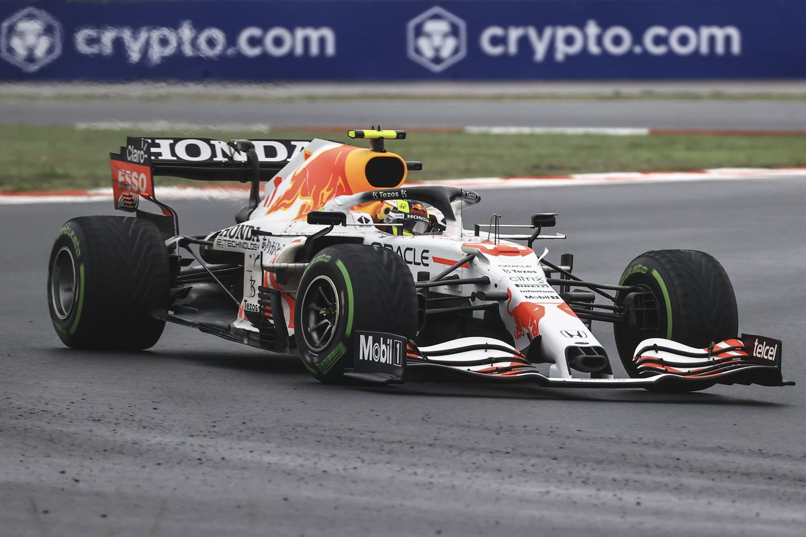
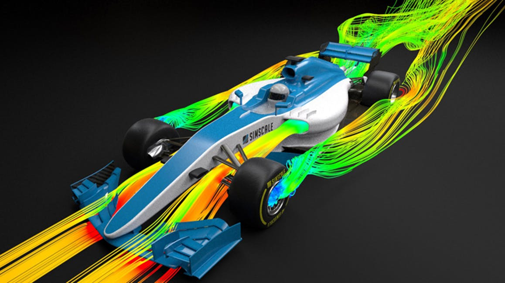
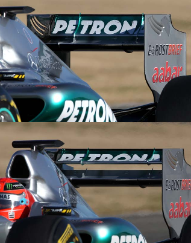
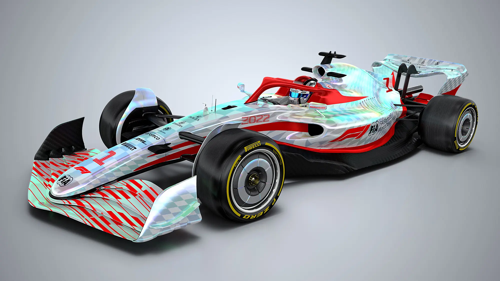

Overview
Formula 1, commonly refered to as F1, is considered the most prestigious racing series in the world and the pinnacle of motorsport. The series pairs up the most advanced cars with the greatest drivers to prove which team can create the fastest machine. Every driver is fighting for the drivers title and fighting alongside one other teammate for the manufacturers title. Currently there are 10 teams with 20 drivers.
The Race Weekend
In F1, races take place over the course of a weekend:
- Friday
- Free Practice 1 (FP1)
- Free Practice 2 (FP2)
- Saturday
- Free Practice 3 (FP3)
- Qualifying
- Sunday
- Grand Prix (Race)
Free Practice
Free practice allows teams to gather data so they can prepare their cars and drivers. Currently, all sessions are an hour long, but in the past the sessions would last 90 minutes on Friday and 60 minutes for FP3 on Saturday.
Qualifying
Qualifying is split into three rounds (Q1, Q2, and Q3) in which drivers set the fastest time possible to determine the starting order for the race on Sunday. During Q1 and Q2, the slowest five drivers are elimated and cannot continue onto the next round. In Q1 the top 10 drivers go all out for the fastest lap. The driver who secures it by the end of the session starts first, otherwise known as pole position, and they are awarded a qualifying trophy.
Grand Prix
Each race length is determined by the amount of laps that complete 305 kilometers (~190 miles). Drivers finishing in the top 10 positions earn points for the championship towards the drivers title and the manufacturers title.
The Point System
Each driver earns their own points for the drivers title however their points are added to their teammates' to calculate their team's progress towards the manufacturers title. A list for the amount of points with the respective top 10 finishers is provided below.
- +25 points
- +18 points
- +15 points
- +12 points
- +10 points
- +8 points
- +6 points
- +4 points
- +2 points
- +1 point
An extra point is awarded to the driver who sets the fastest lap during a Grand Prix. While it may not seem like a lot, championships can come down to those few points gained.
Technology
Possibly the most outstanding feature of F1 is the technology that it produces.
F1 Tires
A distinguishing feature of F1 cars is the assortment of colored tires they use. Currently all tires used are manufactured by Pirelli to provide F1 cars with immense amounts of grip allowing them to corner at speeds up to 300km/h (190 mph).
Dry tires come in three different colors to signify their own properties:

-
Softs
- The red colored compound is made to warm up quickly and provide the most grip within a short period of time. Often used for qualifying and setting the fastest lap.
-
Mediums
- These yellow colored tires are meant to strike a balance between the quickly warming softs and the durable hards.
-
Hards
- The hardest compound with the least rate of degredation. This comes at the cost of a slow rate of warming up although it's grip is consistent throughout.
Aerodynamics
Aerodynamics are the sole reason for the complicated and twisting shape of an F1 car.
Granted, F1 cars have a poor drag however, they have an absurd amount of downforce (negative lift) to keep the car pinned down and increase grip while cornering at high speeds. To counteract the high amount of drag while driving on straights and provide more overtaking opportunities for the drivers the FIA–the governing body of F1–implemented the Drag Reduction System (DRS). DRS, in short, is a flap in the rear wing that can open during high speed sections of a track if a car is trailing another car within a one second margin.
The 2022 Season
The upcoming 2022 season comes with major changes in the regulations of F1, introducing a spending cap for teams and changing the base chassis used for cars. The spending cap is largely due to the Mercedes AMG Petronas team dominating the sport with a massive budget of $484 million in 2019 whereas the lowest scoring team, Williams, spent a little over a quarter of that at $132 million.
The new chassis brings about a new era of F1 with aerodynamics for improved racing. Many issues with the current chassis are centered around the difficulty in following a leading car due to the disruption of air which lightens the pressure of downforce on the tires thus, decreasing the grip of the car. This led to the creation of the drag reduction system but even this was not enough to create more overtaking opportunities.
